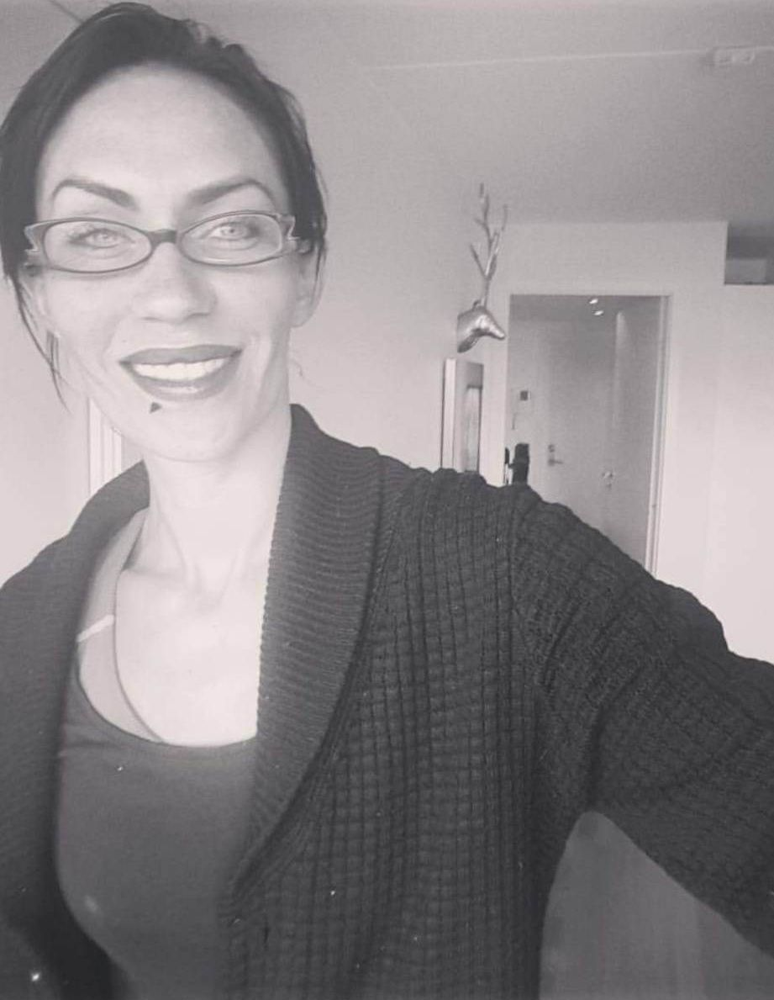

På Wellness retreat senter bor du, lager du mat og jobber sammen med seks elever i en uke. Søndag til søndag.
Huset har alle fasiliteter: tropiske planter, jacuzzi, utebadstue, lite basseng, drivhus, egne dyrkede grønnsaker, ulike soner ute – alle steder man kan sitte i å nyte stillheten.
Dette er stedet hvor du vil bli sett, hørt, anerkjent og være I deg selv.
Wellness retreat center
• Fra indre kaos til indre enhet og ro
• Lærer deg å stille dype spørsmål fra hjertet og hvor de ulike spørsmålene treffer kroppen
• Bo i rolige, tropiske omgivelser, nær havet på sørlandskysten
• Lærer deg å meditere og koble ut støy
• Bli bedre kjent med deg selv
• Lærer deg coatching teori
• Jobbe sammen i coatching grupper med hva og hvordan spørsmål
NB: Har du en psykisk lidelse/ diagnose er dette noe vi respekterer og må ta hensyn til. Dette kan gjøre det utfordrende og delta, men det er lurt å finne ut sammen i samtale før eventuell påmelding.
Hilde wellness, 40 år gammel fra Kristiansand.
Jeg er brennende opptatt av å se andre, og løfte de mot nye livsmål.
Viktige verdier for meg er åpenhet og ærlighet.
Jeg har jobbet som frisør i mange år, og har tatt utdannelse
innen Leadership by Heart academy i 2016, som life coach.
Jeg bor på stedet og jobber samtidig som frisør.
Wellness retreat center er ett sted for samhold, utvikling og velvære til fingerspissene.
